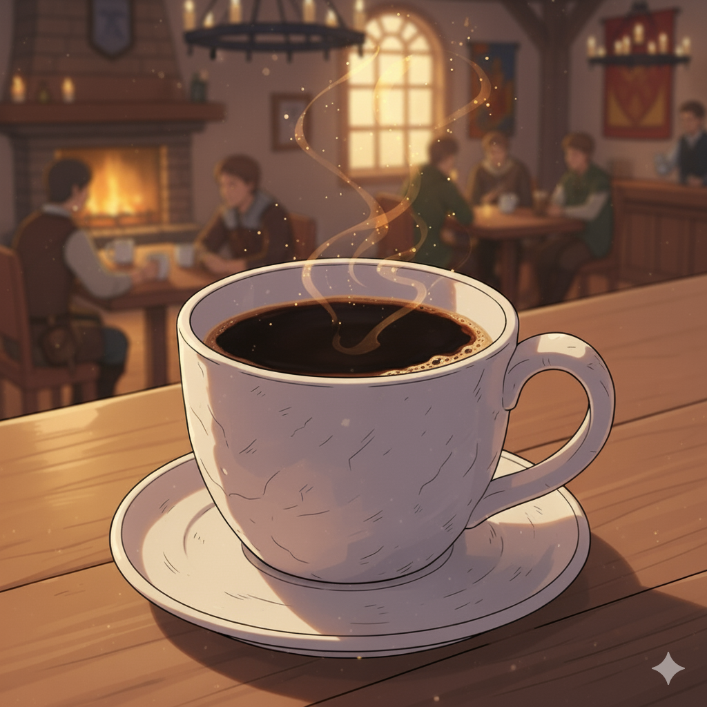
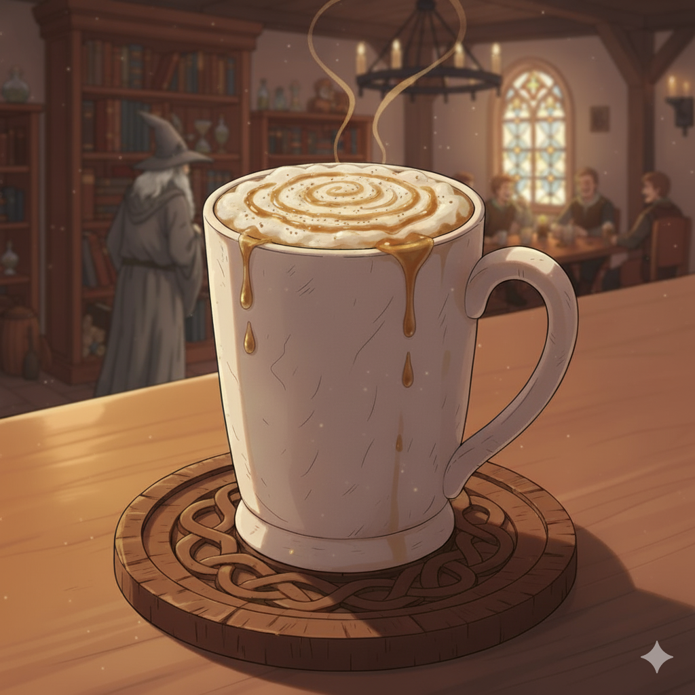
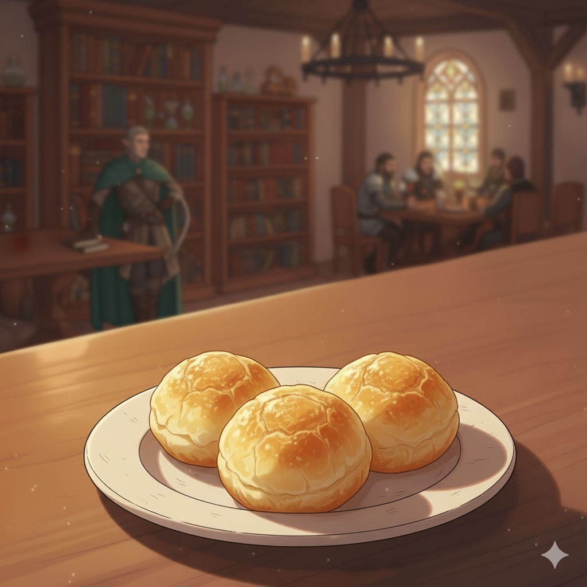
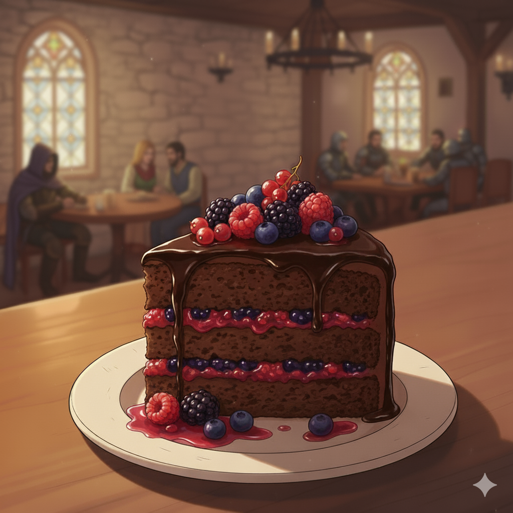
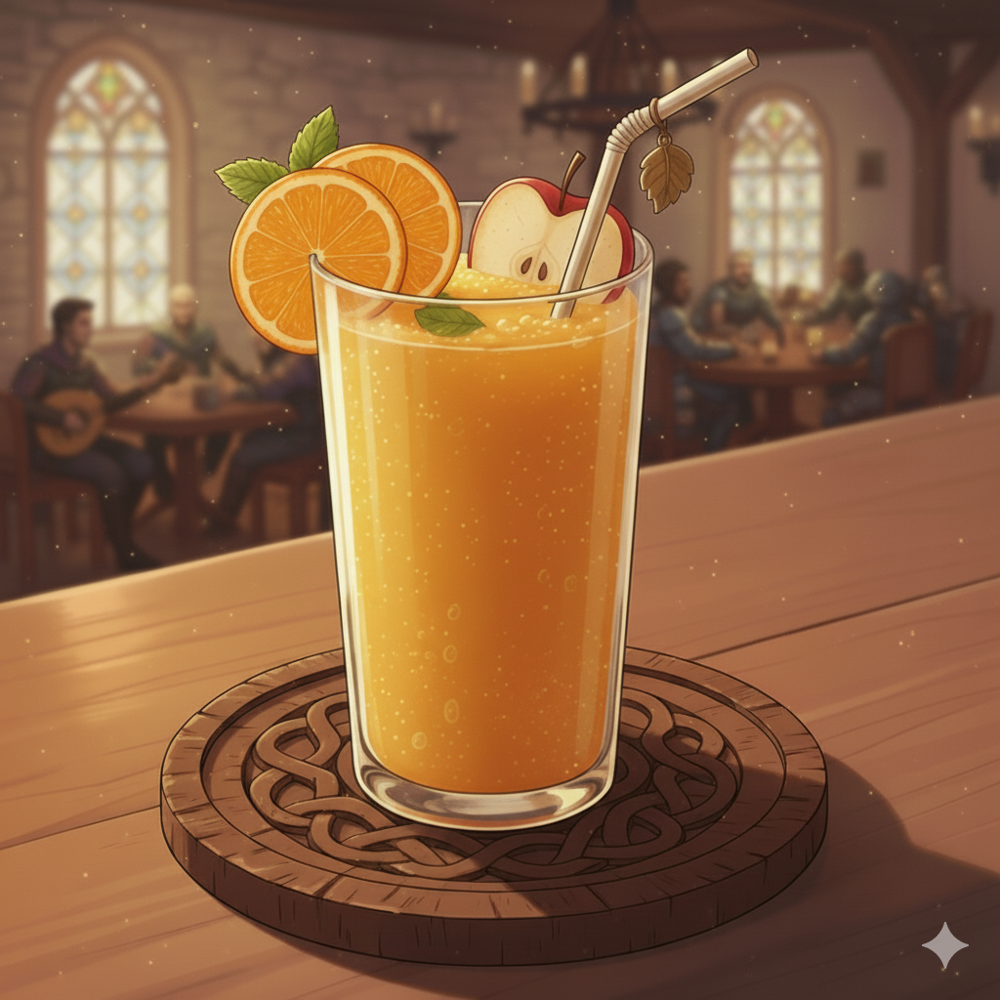

|  | Bebida do Ferreiro |
Um café forte e escuro como a noite, para despertar o espírito aventureiro. |
7 moedas de cobre |
|  | Leite Quente do Vale |
Uma bebida cremosa com especiarias e um toque de mel, coberta com espuma. Aconchego puro. |
10 moedas de cobre |
|  | Pães do Anão |
Pequenos e robustos pães de queijo, perfeitos para acompanhar qualquer refeição. |
9 moedas de cobre |
|  | Torta do Bosque Sombrio |
Uma fatia generosa de bolo de chocolate denso, com recheio de frutas silvestres. |
14 moedas de cobre |
|  | Néctar do Pomar Dourado |
Suco de laranjas e maçãs colhidas sob o sol da manhã, espremido na hora. |
8 moedas de cobre |